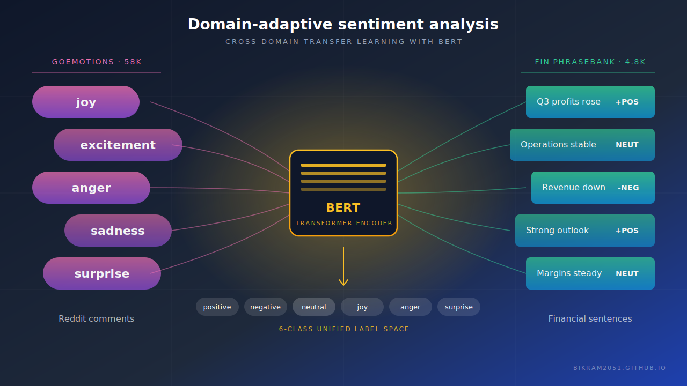

Domain adaptive sentiment analysis
A sentiment model that had to work across two very different kinds of writing: casual Reddit comments and formal financial reporting. I owned the data side. That meant pulling in GoEmotions and the Financial PhraseBank, writing the cleaning and standardisation steps so both corpora came out in a consistent shape, and producing the train, validation and test splits the modelling work ran on. The team used those splits for the BERT and FinBERT models and a Streamlit dashboard that displayed the metrics.
Tools Python, pandas, Hugging Face, BERT and FinBERT